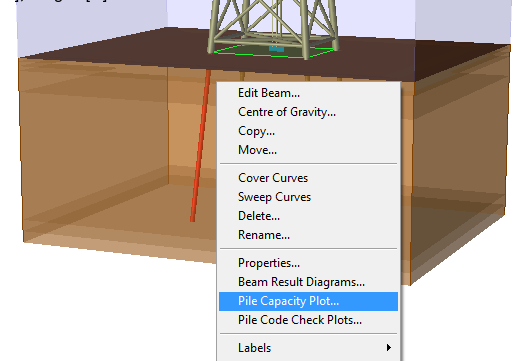
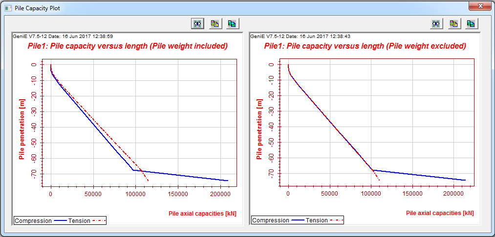

10.12.3. Pile Capacity Plot
You may create pile capacity plots showing the axial capacity for compression and tension. One plot with pile weight included and one without pile weight. Select pile, RMB and select option Pile Capacity Plot

Fig. 10.100 Create plot

Fig. 10.101 Pile Capacity Plot example